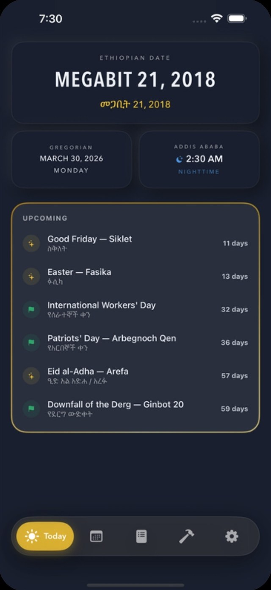
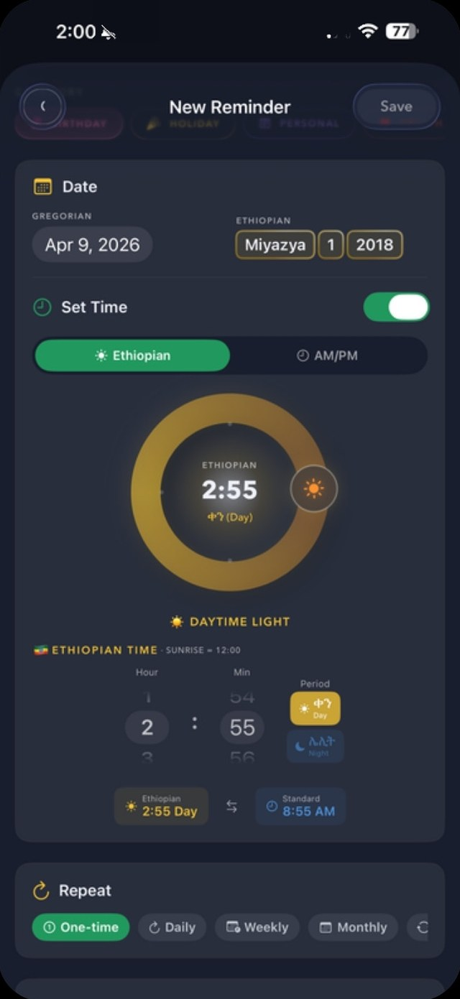
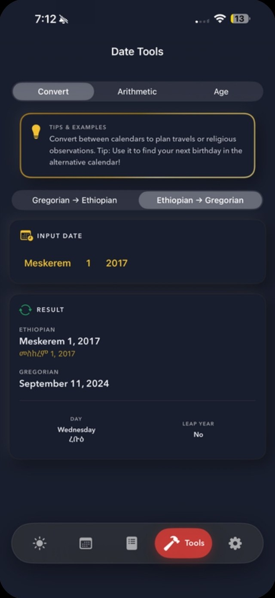
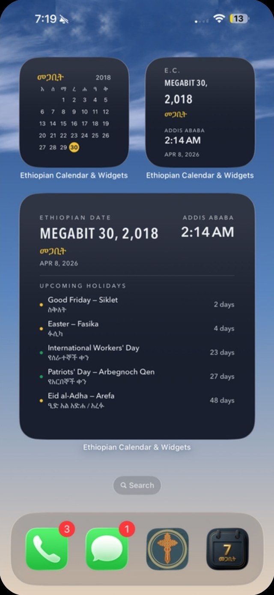

01 · Today
Your day at a glance.
Both dates, Addis Ababa time with day or night, and every holiday coming up.
Utilities · iPhone, iPad, Watch & Mac
Your day at a glance — in Ethiopian time.
The Ge'ez calendar for daily life: Ethiopian and Gregorian dates side by side, Addis Ababa time on the Ethiopian clock, and holidays that come with their history.
Addis Ababa · now
–:––
Drag the sun, click the ring, or use the arrow keysDrag the sun or tap the ring to convert any time.
02 — A closer look
Keep scrolling. The sun rises at 12:00, the way the Ethiopian day begins. Swipe, or use the arrows below, to see all five screens.

01 · Today
Both dates, Addis Ababa time with day or night, and every holiday coming up.

02 · Reminders
Pick a time on the Ethiopian clock, day or night, or in AM/PM. Repeat it daily, weekly or monthly.
03 · Holidays
National, religious and cultural holidays, each with a short history and a few facts worth knowing.

04 · Date Tools
Ethiopian to Gregorian and back, adding or subtracting days, and working out an exact age.

05 · Widgets
A month grid, today with Addis time, and the holidays ahead — on the Home Screen, Lock Screen and Apple Watch.
00 / 05 · A closer look
03 — Date Tools
Convert in either direction, the way the app's Date Tools do. Try a birthday, an anniversary, or the next holiday.
Holidays shown here are the fixed and Easter-based ones. Islamic holidays follow the moon; the app has those too.
Date Tools
Input date
Result
Free on the App Store for iPhone, iPad, Apple Watch and Mac.